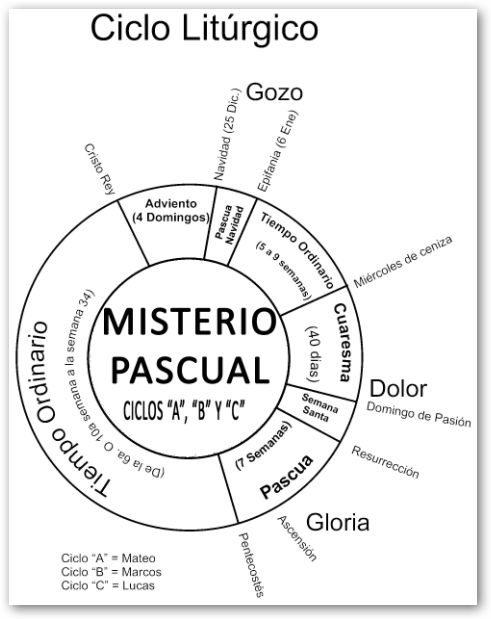
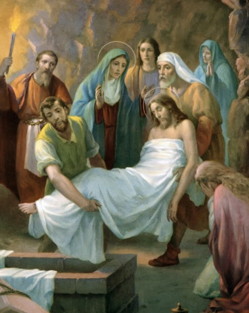

La Semana Santa es el momento litúrgico más intenso de todo el año.A la Semana Santa se le llamaba en un principio “La Gran Semana”. Ahora se le llama Semana Santa o Semana Mayor y a sus días se les dice días santos. Esta semana comienza con el Domingo de Ramos y termina con el Domingo de Pascua.

Vivir la Semana Santa es acompañar a Jesús con nuestra oración, sacrificios y el arrepentimiento de nuestros pecados. Asistir al Sacramento de la Penitencia en estos días para morir al pecado y resucitar con Cristo el día de Pascua.
.jpg)
Lo importante de este tiempo no es el recordar con tristeza lo que Cristo padeció, sino entender por qué murió y resucitó. Es celebrar y revivir su entrega a la muerte por amor a nosotros y el poder de su Resurrección, que es primicia de la nuestra.La Semana Santa fue la última semana de Cristo en la tierra. Su Resurrección nos recuerda que los hombres fuimos creados para vivir eternamente junto a Dios.
La Pascua es una fiesta que varía de año a año en relación con nuestros calendarios, pues está basada en el calendario Judío que se guía por la luna.
El día central para calcular la Pascua y la cuaresma es el día de la Resurrección del Señor. Para saber la fecha de la cuaresma y su inicio, el miércoles de ceniza, debemos contar 40 días hacia atrás desde el domingo anterior al domingo de Resurrección (domingo de ramos o de palmas). Después del domingo de Resurrección se cuentan 40 días hasta la Ascensión (aunque la fiesta se celebra el Domingo siguiente); una semana después de la Ascensión se celebra Pentecostés (aunque bíblicamente ocurre a los 50 días de la Resurrección).
Celebramos la entrada triunfal de Jesús a Jerusalén en la que todo el pueblo lo alaba como rey con cantos y palmas. Por esto, nosotros llevamos nuestras palmas a la Iglesia para que las bendigan ese día y participamos en la misa.
Es el día más importante y más alegre para todos nosotros, los católicos, ya que Jesús venció a la muerte y nos dio la vida. Esto quiere decir que Cristo nos da la oportunidad de salvarnos, de entrar al Cielo y vivir siempre felices en compañía de Dios. Pascua es el paso de la muerte a la vida.
Este día recordamos la Última Cena de Jesús con sus apóstoles en la que les lavó los pies dándonos un ejemplo de servicialidad. En la Última Cena, Jesús se quedó con nosotros en el pan y en el vino, nos dejó su cuerpo y su sangre. Es el jueves santo cuando instituyó la Eucaristía y el Sacerdocio. Al terminar la última cena, Jesús se fue a orar, al Huerto de los Olivos. Ahí pasó toda la noche y después de mucho tiempo de oración, llegaron a aprehenderlo.
Ese día recordamos la Pasión de Nuestro Señor: Su prisión, los interrogatorios de Herodes y Pilato; la flagelación, la coronación de espinas y la crucifixión. Lo conmemoramos con un Via Crucis solemne y con la ceremonia de la Adoración de la Cruz.

Se recuerda el día que pasó entre la muerte y la Resurrección de Jesús. Es un día de luto y tristeza pues no tenemos a Jesús entre nosotros. Las imágenes se cubren y los sagrarios están abiertos. Por la noche se lleva a cabo una vigilia pascual para celebrar la Resurrección de Jesús. Vigilia quiere decir “ la tarde y noche anteriores a una fiesta.”. En esta celebración se acostumbra bendecir el agua y encender las velas en señal de la Resurrección de Cristo, la gran fiesta de los católicos.
Entre las tradiciones que han distinguido a Atlixco es la ‘Procesión del Silencio’ en la comunidad de Nexatengo, la cual es realizada por la cofradía de Nazarenos de la entidad y la ‘Procesión de Engrillados’. Cabe mencionar que ambos eventos son actos de penitencia, fe y de arrepentimiento, mismos que se realizarán el próximo 6 de abril a partir de la seis de la mañana en Santa Lucía Cosamaloapan”, refirió el alcalde. Cabe precisar que en la “Procesión de los Engrillados” los participantes se caracterizan por vestir de luto y portar pesadas cadenas de aproximadamente 60 kilos, además de ponerse espinas en el cuerpo. Ellos recorren las principales calle de la ciudad y tienen una preparación, tanto espiritual como física de dos meses. Se realizará también el viernes 6 de abril.
En este dia, la gente de la colonia y que vienen de otros lugares se juntan para celebrar una misa que tiene un tiempo de 2:00 a 3:00 horas. En la procesion la virgen maria es a quien se le hace esta celebracion ya que esta de luto y con forme la procesion el padre o las encargadas de ello van haciendo un rosario, y 4-6 mujeres son elegidas o ellas misma se ofrecen para cargar la imagen de la virgen en todo el recorrido, y en algunas casa la gente pone sus altaras y se mantienen fuera de su casa para resivir a la imagen.
La representacion de la muerte de jesus es representada por cada iglesia de atlixco con engrillados pasando por donde acostumbran poner alfombras de colores.
La gente se reune para llevar a cabo una misa a causa de la resurreccion de dios, el padre dirige la misa. Despues de terminar la misa el padre va descubriendo poco a poco la cruz donde Jesus fue crusificado y toda la gente se levanta de su aciento y va a recibir o adorar la cruz.
Este día recordamos la Última Cena de Jesús con sus apóstoles en la que les lavó los pies dándonos un ejemplo de servicialidad. En la Última Cena, Jesús se quedó con nosotros en el pan y en el vino, nos dejó su cuerpo y su sangre. Es el jueves santo cuando instituyó la Eucaristía y el Sacerdocio. Al terminar la última cena, Jesús se fue a orar, al Huerto de los Olivos. Ahí pasó toda la noche y después de mucho tiempo de oración, llegaron a aprehenderlo.
Este dia la gente se reune para hacer un recorrido sobre alfombras que la gente de la comunidad se dedica hacerlo, algunos se paran desde la 5:00 de la mañana para tener listas las alfombras y cuando la imagen de Jesus y todos los que lo acompañan puedan apreciar y giarse, finalizando el recorrido empiezan las 3 caidas donde Jesus fue cargando su cruz donde fue crusificado.
La Cuaresma es el tiempo litúrgico de conversión, que marca la Iglesia para prepararnos a la gran fiesta de la Pascua. Es tiempo para arrepentirnos de nuestros pecados y de cambiar algo de nosotros para ser mejores y poder vivir más cerca de Cristo. La Cuaresma dura 40 días; comienza el Miércoles de Ceniza y termina antes de la Misa de la Cena del Señor del Jueves Santo. A lo largo de este tiempo, sobre todo en la liturgia del domingo, hacemos un esfuerzo por recuperar el ritmo y estilo de verdaderos creyentes que debemos vivir como hijos de Dios. El color litúrgico de este tiempo es el morado que significa luto y penitencia. Es un tiempo de reflexión, de penitencia, de conversión espiritual; tiempo de preparación al misterio pascual.

En la Cuaresma, Cristo nos invita a cambiar de vida. La Iglesia nos invita a vivir la Cuaresma como un camino hacia Jesucristo, escuchando la Palabra de Dios, orando, compartiendo con el prójimo y haciendo obras buenas. Nos invita a vivir una serie de actitudes cristianas que nos ayudan a parecernos más a Jesucristo, ya que por acción de nuestro pecado, nos alejamos más de Dios. Por ello, la Cuaresma es el tiempo del perdón y de la reconciliación fraterna. Cada día, durante toda la vida, hemos de arrojar de nuestros corazones el odio, el rencor, la envidia, los celos que se oponen a nuestro amor a Dios y a los hermanos. En Cuaresma, aprendemos a conocer y apreciar la Cruz de Jesús. Con esto aprendemos también a tomar nuestra cruz con alegría para alcanzar la gloria de la resurrección.
Para los miembros de la iglesia cristiana evangélica, la Semana Santa es el tiempo para recordar la muerte de Cristo. Para conmemorarla, se congregan en una jornada de oración y adoración, la cual inicia el Jueves Santo a las 9:00 de la noche y se extiende por 24 horas. En esta reunión se dan cita grupos artísticos y musicales, ya que los cristianos creen que “Dios habita en medio de la alabanza”. Además, para ellos es fundamental la vigilia, es decir, pasar una noche en vela y adorando a Dios.

La celebración de la Semana Santa para los pentecostales inicia el jueves a las dos de la tarde con un desfile, en el cual reparten volantes, entonan canciones e invitan a toda la comunidad a congregarse en una reunión que tiene lugar en su centro de culto a las seis de la tarde. Una vez allí en el templo, dan apertura a la fiesta denominada ‘Levántate, hoy es el día de tu salvación’. En este acto se efectúan bautizos, y llevan a cabo cuatro cultos o reuniones especiales. Desde el día jueves se reúnen a alabar a Dios, para ello cuentan con la presencia de grupos musicales, duetos, mariachis y vallenatos, entre otros, porque, en realidad, viven una fiesta. El viernes tienen la gran confraternidad, en donde a las 6:00 de la mañana y a las 2:00 y 5:30 de la tarde adoran a Jesús, para reconocerle su grandeza y su poder. Aparte de eso piden por la salud de los enfermos y porque se mejore la situación del mundo, manifestó José Ignacio Sierra.

En el sentir de los adventistas, la Semana Santa es la conmemoración de la pasión de Cristo; sin embargo, los seis días los trabajan normalmente, además, no tienen prohibición para ingerir alimentos, aunque tienden a ser vegetarianos. “Nosotros nos ceñimos a la Biblia y en ella no dice en ninguna parte que debemos descansar; lo que se señala allí es que hay que descansar antes de la preparación, es decir, el viernes. El sábado es el día de nuestro culto. Y el domingo también oramos. “Un acto que reviste de mucha importancia es el lavatorio de pies, pero esto lo hacemos cada tres meses; adicionalmente, hacemos una cena con pan y con vino”, dijo Pedro Obando, adventista desde hace 40 años. Para los adventistas, “las estaciones del vía crucis son 14 crucecitas de madera, pegadas a las paredes de una iglesia. Los 14 cuadros representan varias escenas de la vida de Cristo camino al calvario que no son estrictamente necesarias. Fueron los franciscanos quienes iniciaron la devoción del vía crucis en Italia cerca al año 1350″, complementó.

Los Testigos de Jehová consideran que la Semana Mayor es una fecha común; ellos celebran anualmente la muerte de Jesús, pero lo hacen según el calendario arameo. En dicha reunión comparten vino y pan, tal como lo hizo el Señor en la última cena. “Nosotros celebramos la muerte de Jesús con una cena, cada año la fecha puede variar dependiendo del calendario arameo. “Durante la Semana Santa que llaman los católicos, los Testigos de Jehová comemos normalmente, ya que consideramos que esos son días común y corriente. A parte de ellos no creemos en santos ni imágenes”, comentó una feligrés Testigo de Jehová.